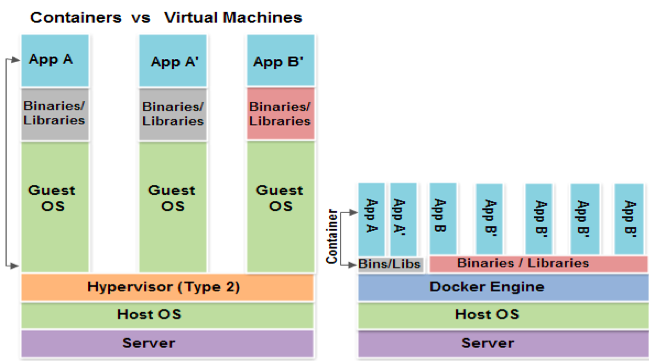

Docker / Dockerfiles / Fig
Christophe Brun
Docker / Dockerfiles / Fig
Sommaire
Introduction
Introduction
- Docker est une solution Open Source de développement, déploiement, et exécution d'application.
- Son but principal est de simplifier le déploiement d'application quelque soit l'infrastructure utilisé.
- La vision est plus infrastructure qu'applicative.
- Docker est basé sur LXC : Exécution d'application dans un container isolé sur une machine hôte.
- Terminologie :
- Container : c'est la partie exécutable de l'application. Cet une "instance" d'une image
- Image : Ce sont des "template" d'application. Utilisé pour créer des container. Sont en lecture seule
- Layer : Ce sont les couces nécessaire à la création d'une image : Couche OS, couche Apache ...
- Registry : Entrepôt d'images
VMs / Containers
- Les VM sont isolées au niveau OS
- Les containers partagent l'OS hôte et sont isolés lors de l'exécution
